Victorion
Giftset (Online Retailer Exclusive)
Victorion
Giftset (Online Retailer Exclusive)
Allegiances
: Autobot
Set Price
: $100 (U.S.)
(NOTE: Because this set is composed of repaints,
this is not a full-blown review. This mainly covers any changes made to
the set and the color scheme, and merely compares it to the original versions
of these molds. For a review on CW Legends Groove-- the mold used for Rust
Dust-- go
here
. For a review on Alpha Bravo--
the mold used for both Skyburst and Stormcloud-- go
here
.
For a review on CW Dead End-- the mold used for Dust Up-- go
here
.
For a review on CW Breakdown-- the mold used for Jumpstream-- go
here
.
For a review on CW Hot Spot-- the mold used for Pyra Magna-- go
here
.)
Dust
Up
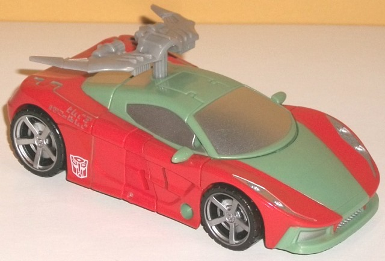
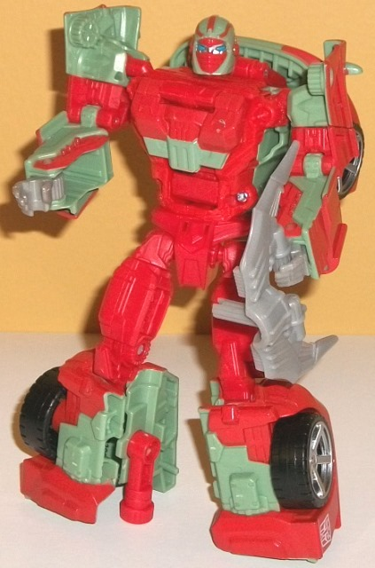
Size
: Deluxe
Difficulty of Transformation to Robot
:
Easy
Difficulty of Transformation to Leg
:
Very Easy
Difficulty of Transformation to Arm
:
Easy
Color Scheme
: Light pale green,
moderately bright red, and some silver, black, light milky gray, and moderately
light blue
Individual Rating
: 9.0
Like the rest of the
Victorion toys, Dust Up is not a new mold, but a redeco (and, in her case,
partial remold) of a previous Combiner Wars toy. Luckily, she's a remold
of one of the best molds in the line. Like most of the rest of the "Rust
Renegades" or the "Torchbearers"-- depending upon what part of the official
fiction you want to follow-- Dust Up's primary color scheme is primarily
a moderately bright red and a light pale green. The first color looks pretty
decent by itself, and would look great on, say, a G2 figure with other
bright colors. However, the light pale green is just a horrible, bland
shade that doesn't look good by itself and looks very weird against that
bright red. It's just a bad color scheme-- and I get that (in general)
it was fan-picked, but that doesn't change my opinion that it looks awful
and is ill-fitting on a sportscar, as well. In general the toy does a pretty
decent job of making sure no area of Dust Up has too much of either of
these colors and varies them up, but like the rest of this set, she needed
another main color. That said, the red is a bit more prevalent than the
green on her, particularly in robot mode, and out of the two colors I prefer
that one more. She also has some black-- used on the tires-- and silver,
which is used on the wheel hubs, face, and front bumper. (Unfortunately
there's no paint details on her rear bumper.) I do like the additional
colors, but neither of them really contribute enough to the color scheme
to make it anything more than still just two-tone. She also has just a
touch of that blah light milky gray-- used for her hands-- but that's it,
so it's easy to overlook, thankfully. One neat addition to her paint scheme
is that Dust Up has Cybertronic writing on both sides of her vehicle mode,
which read-- together-- "Just like us... you soon will rust".
Dust Up has some mold
changes as well-- she has a remolded head, chest, hands, and a new weapon.
Her headsculpt is really well-done, and I love the "ninja" elements of
it, with a red "mask" and wavy lines on the head, as well as bit of silver
on her visible face and some nice blue eyes. Her chest and hands are remolded
to make her slightly more feminine-- which are minor changes, but I still
appreciate them. That said, the hips could've used a little "rijiggering"
for a fembot, and her arms are a bit bulky. Still, the mold fits a female
okay, overall. Her weapon is pretty awesome-- she has a C-shaped blade
that she can hold, and it's just a really unique weapon and has some nifty
curved details on it. I don't like the milky gray plastic, though, and
wish it was painted silver like most of the other weapons in this set.
Jumpstream
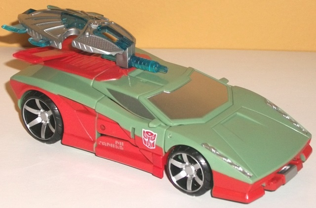
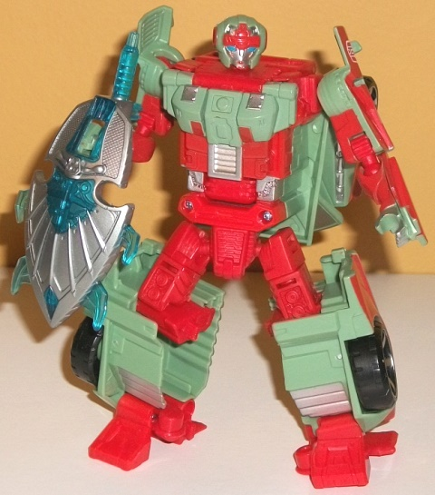
Size
: Deluxe
Difficulty of Transformation to Robot
:
Easy
Difficulty of Transformation to Leg
:
Very Easy
Difficulty of Transformation to Arm
:
Very Easy
Color Scheme
: Light pale green,
moderately bright red, and some silver, black, transparent icy blue, and
moderately light blue
Individual Rating
: 7.2
Jumpstream is a remold
of one of the worst Combiner Wars deluxe molds, so I was rather disappointed
to see it chosen for this set. Some of the molds aren't great at feminine
proprtions, but this mold is bad even at male proportions, much less trying
to make it female-- it just doesn't work at all. Her color scheme is pretty
similar to Dust Up's, but with a bit more even amount of the green and
the red. I do like the broad red stripes along the sides of the vehicle
mode and the constant flipping back-and-forth between one color and the
other to prevent any area from being too one-tone, but it still just looks
rather bad. Just like Dust Up, she has a few other minor accent colors--
you've got the obvious black on the wheels, but there's also some silver
paint on the wheel hubs, windows, face and forehead, and parts of the chest
and hands. They're okay accents, but again, don't really add much to the
scheme overall in the amount that they're used. Like the other Victorion
members, Jumpstream has Cybertronic writing on the sides of her vehicle
mode, which read "All shall be... turned to dust".
Like most of the other
Victorion members, Jumpstream has a new weapon, a new head and chest sculpt,
and re-sculpted lower arms that are slimmer to help her look *at least
a little* more feminine. The lower arms look decent enough, as does the
new chest, and there's some nice vent and bolt details on the latter, to
boot. The headsculpt is off, though-- the face is too small, and proportionally
the head-- and especially the forehead-- is just too wide and looks weird.
The "Leia-like" red hubs on the ends don't look like the "curls" they're
suposed to because of how relatively far they are from her actual head.
The face itself is painted well though, with some nice blue eyes, little
red lines below the eyes and on the lips, and some red and silver on the
forehead. Jumpstream's weapon is kind of a weird shield with a couple of
spikes on the side-- it looks pretty good as a defensive weapon, but without
an offensive weapon it's kinda odd for her to just hold a shield.
Pyra
Magna
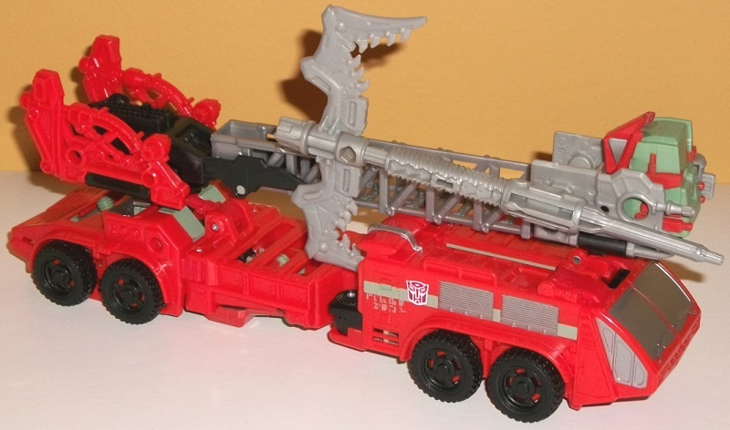
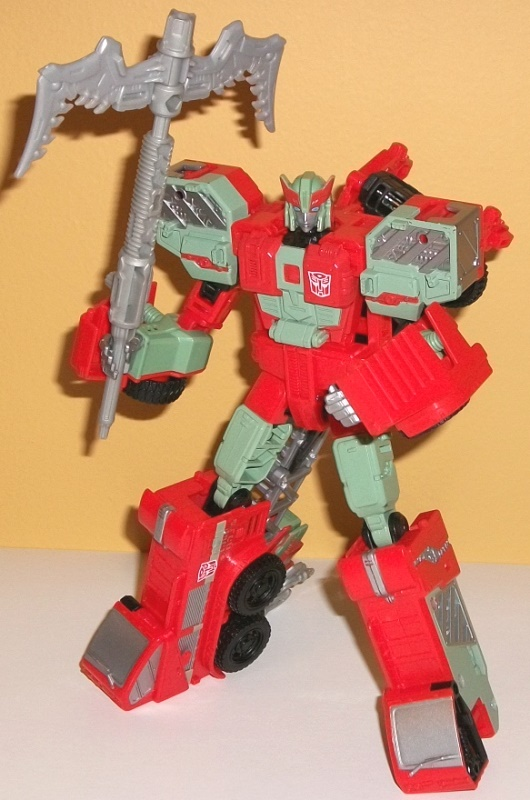
Size
: Voyager
Difficulty of Transformation to Robot
:
Easy
Difficulty of Transformation to Torso
:
Medium
Color Scheme
: Moderately bright
red, light pale green, and some silver, black, moderately light blue, light
milky gray, and transparent icy blue
Individual Rating
: 8.9
Pyra Magna has the usual
bright red and pale green color scheme that most of the rest of the Victorion
members have, but nearly all of her red is focused on the fire truck mode--
which certainly makes sense, and actually makes her look quite a bit like
a normal fire truck, I'm honestly surprised it took this long to get this
mold in red. In robot mode is where most of her pale green comes through--
mostly on the arms, upper legs, and a bit on the chest and head (though
there are some green stripes on the vehicle mode). More so than any other
member of Victorion, Pyra Magna has a good amount of milky gray and silver--
the milky gray plastic is mostly used on her ladder, with the silver paint
used on an impressive number of details like her windows, side vents, shoulders,
lower inner leg details, and the like. In either of her modes, there's
no area that's too much of one unbroken color, which is always good, even
though I'm still not a fan of the green/red combo. Beyond the expected
tires, she also has black on some minor connector parts, part of the ladder,
and hips to give a bit more "dark" to her color scheme. Like the other
members of the group, she has Cybertronic writing on both sides of her
vehicle mode-- together they read, "If Cybertron... Be your home".
As far as new mold changes,
there's the Victorion head, which is very poorly hidden at the top of the
ladder-- with Hot Spot, the Defensor head fit in color-wise and also folded
in half, whereas Victorion's head is just... there. Pyra Magna's new headsculpt
looks okay in terms of detail, but it looks rather unoriginal-- it's basically
a female Prowl headsculpt with no other changes beyond the color (though
the blue eyes always look nice against the silver face). I wish it was
more individualistic. She also has a remolded chest, which has to be rather
flat because of the transformation, but does "feminize" her slightly, and
her hands are remolded to be a bit skinnier as well. However, overall--
what with the big shoulders and lower legs, the rather thick arms, and
the like-- this mold definitely makes for a better male than a female.
Her weapon is AWESOME, and is basically a two-bladed scythe. I hate that
it's that blah milky gray plastic, but I love all the spiky details on
it and just the size of it. On one final note, Pyra Magna's "hinge" pieces
in the middle of her legs are misassembled. It's not a huge, toy-breaking
deal, but with tabs on the wrong sides of these hinges, it prevents her
knees from locking in properly in robot mode (though she can still move
around just fine, they just don't
lock
). She can also store the
combiner hands and feet in her vehicle mode in rather odd, very obvious
places, if you need to store everything somewhere. She certainly looks
MUCH better with them off, though.
Rust
Dust
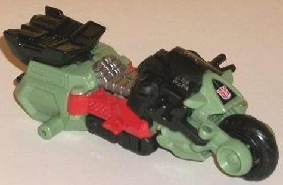
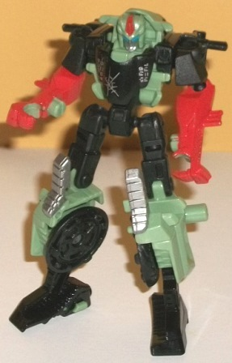
Size
: Legend
Difficulty of Transformation to Robot
:
Easy
Difficulty of Transformation to Armor
:
Medium
Color Scheme
: Light pale green,
black, and some silver, moderately bright red, and moderately light blue
Individual Rating
: 7.4
Compared to most of rest
of the set, Rust Dust's main colors are BLACK and light pale green, with
the red relegated mostly to a secondary color-- mostly just on her lower
arms and head. This honestly looks a little better-- like I said earlier,
the green and red are of such different shades it's like Hasbro couldn't
pick a theme, whereas here they have-- they chose the duller color scheme.
The black still con
trasts
fairly well against the light green (the
latter of which I still don't like as a shade), but it doesn't con
flict
with it. There's also some silver paint on the knees, face, and the windshield.
I particularly like the paint on the windshield-- the "crack in the glass'
helps Rust Dust look a little more rundown just from one paint app. Also,
Rust Dust has Cybertronic writing on the sides of her windshield, which
reads "Far Away, Never Roam". Rust Dust's face is also painted quite well,
with a blue visor, a silver face, and some red on the center forehead vent.
Rust Dust is the only
one in the set who doesn't have any mold changes from the original-- which
I actually don't mind, as the fairly skinny, long-legged nature of the
robot mode actually works a little better for a female than a male. The
facesculpt also fits the team, too, what with the visor and stern silver
face and all.
Skyburst
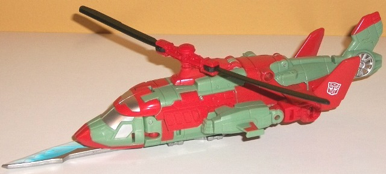
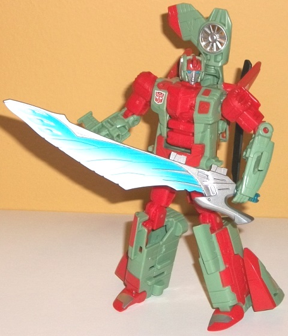
Size
: Deluxe
Difficulty of Transformation to Robot
:
Easy
Difficulty of Transformation to Leg
:
Very Easy
Difficulty of Transformation to Arm
:
Very Easy
Color Scheme
: Light pale green,
moderately bright red, and some silver, black, white, transparent icy blue,
and moderately light blue
Individual Rating
: 7.9
Skyburst is one of the
helicopter "twins", and like the others, her color scheme is a pretty solid
mix of light pale green and the fairly bright red; on Skyburst, both of
the colors are used in a pretty equal manner, though (excepting the weapon)
even less of the accent colors are used compared to the others, making
her desperately in need of some more color variety on a scheme that already
isn't that great to begin with. Most of the paint details on her are rather
asymmetrical paint apps on her helicopter mode, along with some red on
her toes, waist, and tailfins. As for accent colors, she has some black
on her propeller blades, and some silver on her windows, the latter of
which helps tie her in even more thematically with her teammates. As with
the other Victorion members, Skyburst has Cybertronic written on her vehicle
mode-- on the right side, in silver, on top of red paint. It says "Hear
my message, listen and fear".
Compared to Alpha Bravo,
Skyburst has a new head mold, as well as remolded lower arms, a remolded
upper chest, and a new weapon. The headsculpt is pretty good, with a fairly
"normal" silver face with nice blue eyes, silver round side antennae, and
some nice details on the forehead that are painted red. The lower arms
have been remolded to be a bit skinnier and more feminine, and the missile
pods have been removed and replaced with little side wings, making her
helicopter mode look less military-like. The lower part of the main body
"block" is the same-- and doesn't really look feminine as a result-- but
the upper section has been slightly remolded with asymmetrical details--
one side has a flat red square near the top and another red diamond on
the chest with a bolt molded onto it, while her other side has a little
circular "blaster-like" detail and an Autobot symbol underneath it. Her
weapon is pretty straightforward-- it's a fairly long blade. The base plastic
is transparent blue, but it's mostly painted over, with a good amount of
silver near the handle and a be-yootiful blade, with some nice blue-fading-to-white
paint apps on the feathered details. There's pegs on it to be held either
in her hand or on the underside of her helicopter mode, stuck in the same
place where the hand/foot/gun accessory would've plugged in.
Stormclash
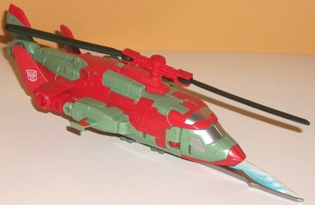
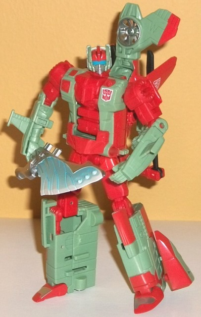
Size
: Deluxe
Difficulty of Transformation to Robot
:
Easy
Difficulty of Transformation to Leg
:
Very Easy
Difficulty of Transformation to Arm
:
Very Easy
Color Scheme
: Light pale green,
moderately bright red, and some silver, black, white, transparent icy blue,
and moderately light blue
Individual Rating
: 7.9
Stormclash, being the
"twin" of Skyburst, not only shares a mold but the same basic color scheme
and mold changes. The main difference is that all of the asymmetrical red
paint apps from Skyburst? They're reversed on Stormclash. The red paint
apps are so "randomly" placed on the helicopter mode, though, that it's
very difficult for me to tell them apart-- more difficult than I think
it should be, even for twins. I think it would've worked better if one
half had been painted red and the other green, or something a bit more
obvious. Even for redecos, these gals are just too similar. Stormclash
has Cybertronic writing on her vehicle mode as well, though on a red patch
on her LEFT side. It says "Danger comes, the end is near". Every other
paint app and plastic color placement is the same on Stormclash as on Skyburst.
Stormclash has the same
general mold changes as Skyburst, though the chest details and sword details
are flipped, again emphasizing how one is basically a "mirror" of the other.
The only exception here-- the only thing that is truly Stormclash's own--
is the headsculpt. She shares the same general shape, but the details are
subtly different. Most obviously Stormclash has a visor as opposed to two
individual eyes, but her side antennae are also slightly more angular and
square, and her central forehead crest slightly more angular as well. Other
than the visor the changes are pretty subtle, though.
Victorion
(Combined Form)
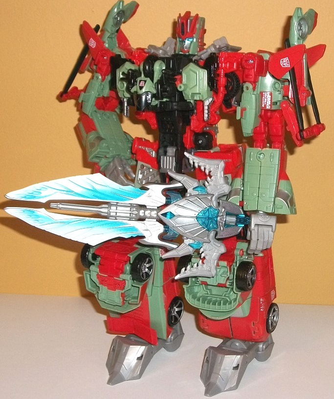
Individual Rating
: 7.8
Obviously the upside
of every member of Victorion having the same color scheme is that the combined
form looks a bit more like one bot-- the black, gray/silver, red, and pale
green are all pretty well dispersed over the entire figure-- the only exception
here being that if you take off Rust Dust, there's a bit too much unbroken
red on Victorion's chest. Victorion's "normal" configuration has the helicopter
twins as the feet and the cars as the arms, but having bulky arms and skinny
legs seems a bit flipped for a female, so my preferred configuration is
that shown above. What's mostly worth commenting on here, of course, are
the mold changes. Victorion's headsculpt is very well-done for the most
part-- it's very angular, with a sharp red head crest above her silver
face with a light transparent blue visor and red chinstrap. The back of
the head is pretty square, but the various designs on the head are well-detailed
both in terms of paint and the mold itself. That said, my one issue with
the head is that her face seems a bit too small proportionally (or her
forehead is too large, take your pick). The new feet look pretty good (beyond
their milky gray blah plastic), and are more stable than the traditional
Combiner Wars feet. Plus, they have slight ankle tilts to give Victorion
slightly more poseability options. Her hands I am not big fans of-- I like
that they're a bit skinner for a fembot, but she can't actually hold her
weapon in the traditional manner-- there's actually a hole in the plastic
near the base of her thumb, and it just looks wrong having her hold her
sword pegged in there instead of actually holding it in her fingers. (Speaking
of the fingers, her hands can move at the base of the index finger and
the other three fingers, with the latter all as one piece-- but no thumb
articulation, so it's a wash compared to the hand/foot/guns in that respect.)
The best part of the mode is definitely the awesome combined sword weapon.
Yeah, there's a little bit of that blah milky gray plastic near the hilt
of the sword and down the center of the blade, but most of the plastic
is either transparent blue, painted silver, or a REALLY nice blue-to-white
fade on the blade. All the parts come together pretty darn nicely, and
make Victorion a bit more individualistic with such an awesome accessory.
Victorion Bio
:
With a will to survive forged in the
unstable environment of the Sea of Rust, the Rust Renegades combine to
form Victorion: a relentless, resourceful combiner who always finds a way
to bring down her targets.
Victorion is an interesting
idea, and I do love (for the most part) the extra bits Hasbro has given
her and her components-- the new faces, the remolded chests on most of
the individual components, the gestalt head/hands/feet and, of course,
the incredible sword. However, it's very much a mish-mash of different
ideas, and once you learn that this was the Fan Vote combiner, it makes
a lot of the choices more logical. The end result, though, is what I feel
is the weakest of the Combiner Wars giftsets-- the main color scheme is
both bland and a bit too bright at the same time and should have had at
least a little more variation between each component, most of the molds
don't fit females all that well, and the combiner hands are frankly pretty
terrible. If Hasbro wanted to do a female combiner, they should have made
most or all of the characters out of new molds. These molds have already
each been done multiple times, and in better color schemes. Not recommended
unless you're fans of the character(s).
Reviews by Beastbot
Back to Transformers:
Generations Index